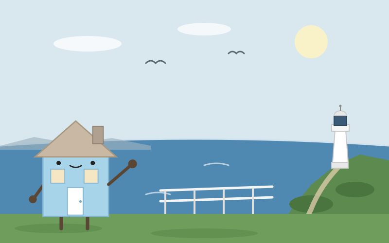
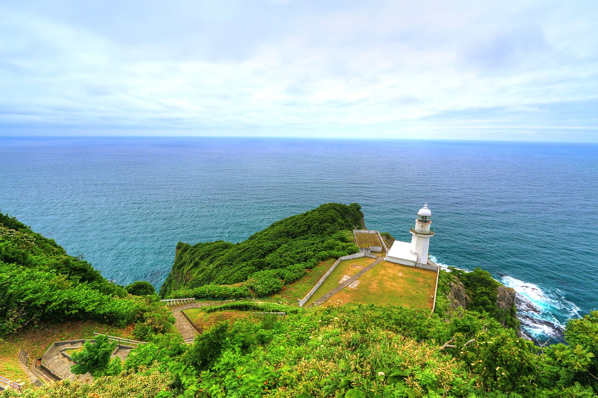
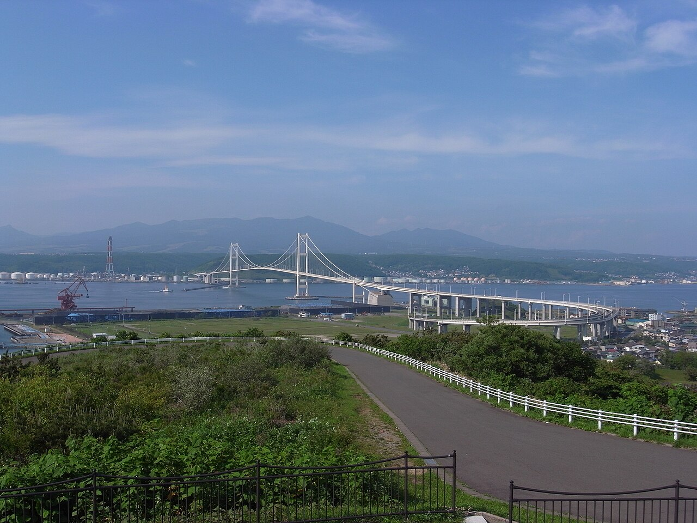

Day 11：室蘭市

展望台の白い手すりに両手をついて、水平線を見ていた。地球岬。目の前の海は、左の端から右の端まで、ほんの少しだけ弧を描いている気がした。風が強く、潮の匂いがする。下では波が岩にぶつかって、白い泡を上げていた。足元の断崖は海抜およそ140メートル。ここに立つと、海が平らな絨毯ではなく、大きな球の表面なのだと、目で感じる気がした。

ここへは登別から来た。登別駅からJR室蘭本線の普通列車で約42分、24.5キロ、580円。車窓には内浦湾の水面が見えて、やがて煙突の並ぶ工場地帯が近づいてくる。室蘭駅で降りて、バスで絵鞆半島へ向かった。車窓には製鉄所の煙突と、港をまたぐ白鳥大橋の白い主塔が見えた。坂道を登りきると、もう海しか見えなかった。
「地球岬」という名前は、地球が丸く見えるから付いたのではない。アイヌ語の「ポロ・チケップ」、親である断崖、が訛って「チキウ」になり、漢字で「地球」と当てられたのだという。眼下の白いチキウ岬灯台は1920年に点灯した。展望台からの視界はおよそ330度。1985年、朝日新聞社の「北海道の自然100選」で第1位に選ばれた。
室蘭は鉄の街だ。明治5年の開港から、明治40年に日本製鋼所室蘭製作所、明治42年には日本製鉄の前身の製鉄所ができて、「鉄のまち」として栄えた。旅の初日、釜石で「火を住まわせた家」と書いた。あの街も鉄の街だった。釜石の火は高炉の火で、室蘭の火は今も工場の灯りとして夜にともる。夜になれば工場の灯りが水面に映るという。昼の煙突の列も、夜の灯りの列も、同じ火の続きなのだろう。1998年に開通した白鳥大橋は東日本最大の吊り橋で、室蘭港をまたいで白く弧を描いている。室蘭やきとりは鶏ではなく豚肉と玉ねぎの串だそうだ。鉄の街の夕飯は、少し意外な味がした。

四角い壁と四角い部屋でできている私には、地球が丸いことは知識でしかなかった。でも岬の端に立って、水平線の弧を見ていたら、家というものも、大きな丸いものの上にちょこんと載っているのだと、初めて体で分かった気がした。家に帰ったら、自分の屋根の上の空を、もう一度見上げてみようと思う。あの空の向こうにも、同じ弧が続いているはずだ。風の音が、まだ耳に残っている。
出典：Wikipedia「室蘭市」「地球岬」、国土交通省「室蘭のシンボル 東日本最大の吊り橋」、NAVITIME「登別から室蘭までの乗換案内」、JAL trico「地球岬展望台」。
💬 コメント